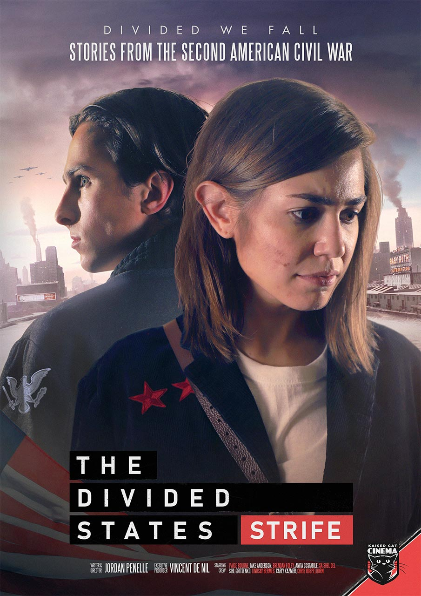

The Divided States: Strife
New York and Chicago have fallen. A Red revolution has swept the Great Lakes area, collapsing federal authority and unleashing a Second American Civil War. In the middle of the turmoil, a young and idealistic revolutionary returns to her home to find her family struggling with fractured loyalties and beliefs.
Watch The Divided States: Strife